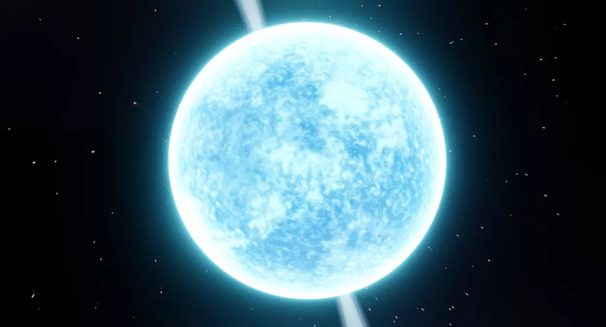

Estrela de nêutrons é um estágio na vida de estrelas muito grandes que, depois de consumir todo o hidrogênio em seu núcleo e explodir em uma supernova, pode virar um corpo celeste extremamente denso e compacto onde não há mais átomos, mas um aglomerado de nêutrons. Por isso o nome: estrela de nêutrons.
Toda estrela tem um ciclo de nascimento, vida e morte e a estrela de nêutrons representa o estágio final para algumas estrelas que têm a massa de 8 ou mais vezes maior que a massa do sol.
Durante toda sua vida as estrelas mantêm um estado de equilíbrio onde a energia liberada pela fusão de hidrogênio em seu núcleo (na maioria dos casos) gera uma pressão suficiente para contrabalançar a energia da compressão gravitacional da estrela sobre suas camadas mais externas, evitando que ela caia sobre si.
Mas, quando uma estrela suficientemente grande já consumiu todo o hidrogênio de seu núcleo, o equilíbrio é perturbado. Ela começa a converter o hélio das camadas mais externas em elementos mais pesados e o processo de fusão vai ficando cada vez mais ineficiente (acontece que a fusão dos materiais que compõem a estrela depende do tamanho dela. Estrelas com massas muito pequenas não conseguem produzir calor suficiente para fundir elementos como o hélio porque quanto mais pesado for o material, maior a temperatura necessária para que haja a fusão).
Durante esse processo a estrela vai liberando enormes quantidades de energia para o espaço e os materiais mais pesados gerados pela fusão do hélio começam a “cair” para o interior da estrela formando um núcleo cada vez mais compacto (ao final ele pode ter até 1015 g/cm³). Quanto mais matéria vai sendo sugada para o núcleo mais rapidamente ele gira gerando um campo gravitacional cada vez mais forte. O equilíbrio que havia entre as camadas externas e o núcleo da estrela se esvai e ela colapsa, explodindo em uma supernova. A camada mais externa é expulsa para o espaço e o que resta é uma estrela formada totalmente por nêutrons: devido à alta densidade, seus prótons e elétrons se unem no núcleo anulando-se.
Uma estrela de nêutrons gira tão rápido que seu período rotacional pode levar apenas alguns milésimos de segundo. Quando o campo magnético da estrela de nêutrons não coincide com o seu eixo de rotação temos um pulsar: uma estrela que emite radiação (proveniente de seu movimento de rotação) de forma mais regular que o melhor dos relógios. O pulso é tão regular que no início os cientistas pensaram que os pulsos fossem algum sinal alienígena.
